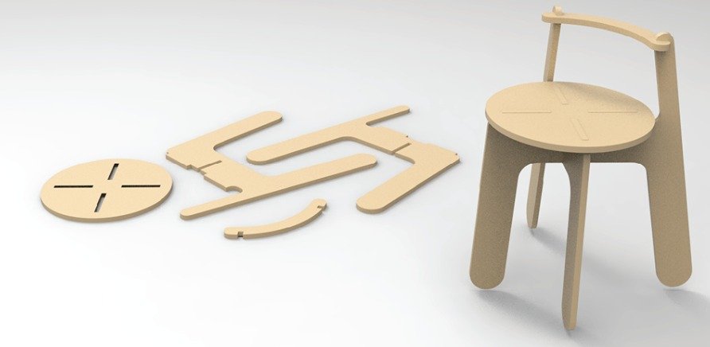
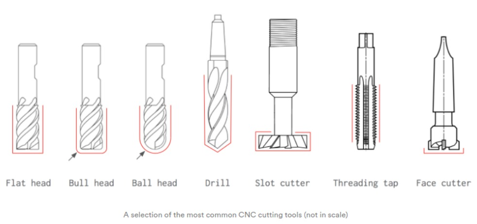
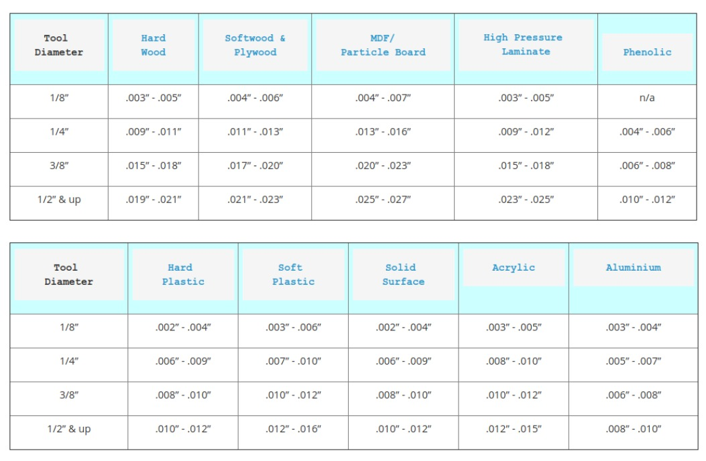

Now in this part I will be going through Computer Controlled Machining with Computer Numeric Cutting (CNC) Machines. You may wonder what is CNC Machining? And why do we need it? What are its applications?
CNC machining is the most common subtractive manufacturing technology today and a hugely flexible and robust way to produce custom metal and plastic parts. Using CAD models, CNC machines precisely remove material from a solid block with a variety of cutting tools. It produces parts with tight tolerances and impressive material properties.
CNC Machining has 2 types of operations, milling and turning. To learn more about what these operations are, click HERE. In this module we will focus more of milling operations as it is more common around! You may of heard milling during PCB fabrications in the earlier topics and you are right! Milling is used in electronics production. This shows that milling is a popular method of fabrication as it has multitudes of applications. In this page I will be talking about how it can be used to make objects out of 2D pieces.
2D Computer Controlled Machining enables the production of flatpack items such as furnitures. For example below is a stool that is able to be assembled from CNC machines by cutting these shapes from a board of wood!
For this topic we will be learning how to operate the CNC Machines and produce items like the flatpack stool above! Before we do that we need to learn about our machine. CNC Machines use drillbits to cut out the desired finishes the products needs, typically a flat head drillbit is used as it is able to deliver the required result of a 2D piece. Below is a pic of different drillbits available.
It is important to know what is the right sizing of toolbits for your work as there is a high probably of tools breaking as it is not hard enough for the work that it does. Sometimes a certian drill bit can be too thin to cut a certain piece. This can be due to the nature of the material or thickness of the material. Thus it is important to research if your drillbit is suitable. Below is a general guide as to what is the right sizes for your work.
Additionally, you can click HERE for a general guide to CNC Machining!
In my time, I wanted to try out making one of the flatpack furnitures myself, thus I drafted a coffee table on Fusion360 to use on a CNC Machine. Below is a preview of my design!
In the coming days I will be exporting the g-code for the router in the workshop from a Computer Aided Machining (CAM) software. this would be able to instruct the machine to do the right steps and produce the coffee table above. So till then stay tuned!!
Click here to return back to documentations!!